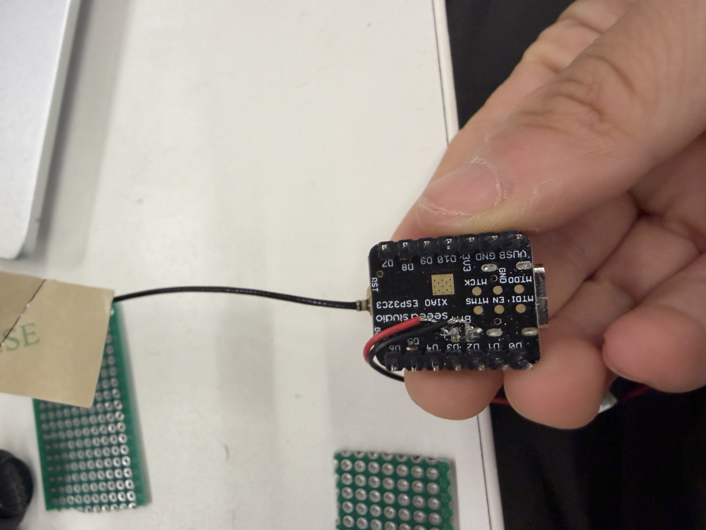
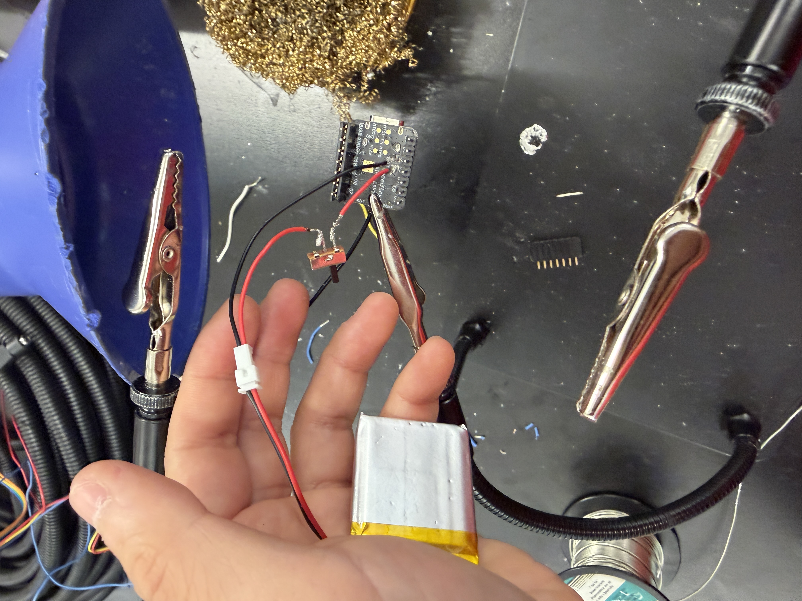

<div class="textcontainer">
<p class="margin"></p>
<h3>Final Project: Anki Clicker</h3>
For my final project, I made an Anki clicker.
<br><br>
<h3>Integration Week (Week 11 technically)</h3>
For integration week, I integrated a lithium ion battery into my Anki clicker (KBT 503035 3.7V 500mAh). At first, I just soldered the red and black wires onto the spaces for them on the Xiao. While this meant the battery would always charge if the Xiao was plugged in, it also meant the Xiao would always be running and seeking Bluetooth connections even if I wasn't trying to connect and do Anki.
As a result, I also incorporated a switch into the red power wire at Bobby's suggestion. Turning this switch off will disconnect the battery, so the Xiao should still be able to be run if plugged in but the battery will not charge. Here are some photos of before and after adding the switch. This was the hardest thing for me to solder because there were many small wires that frayed and the wire was weak leading the red wire to break off from the Xiao at one point.
<br><br>
<figure>
<p></p>
<p></p>
<figcaption> Battery attached to Xiao pre-switch (L) and post-switch (R) with 10 minutes of soldering in between
</figcaption>
</figure>
<h3>Final Project Design</h3>
And finally, here's my Final Project video. Hope you enjoy!
<figure>
<iframe width="560" height="315" src="https://www.youtube.com/embed/90RCex9RxUg?si=csaGYaLsgNCLI1Ni" title="YouTube video player" frameborder="0" allow="accelerometer; autoplay; clipboard-write; encrypted-media; gyroscope; picture-in-picture; web-share" referrerpolicy="strict-origin-when-cross-origin" allowfullscreen></iframe> <figcaption>Final project video</figcaption>
</figure>
<table>
<tr>
<td>Week 1: Website</td>
<td>Hosting the documentation for this project</td>
</tr>
<tr>
<td>Week 2: 3D Modeling</td>
<td>Modeling for Anki controller and everything else</td>
</tr>
<tr>
<td>Week 3: 3D Kinetic Sculpture </td>
<td>Jellyfish motivation</td>
</tr>
<tr>
<td>Week 4: Circuit Control</td>
<td>Jellyfish lighting</td>
</tr>
<tr>
<td>Week 5: 3D Printing</td>
<td>Anki controller</td>
</tr>
<tr>
<td>Week 6: Capacitive Sensing</td>
<td>Controller-jellyfish communication</td>
</tr>
<tr>
<td>Week 7: Output Devices</td>
<td>LED strip in Jellyfish? Alarm? Screen?</td>
</tr>
<tr>
<td>Week 8: Output Devices</td>
<td>LED strip in Jellyfish? Alarm? Screen?</td>
</tr>
<tr>
<td>Week 9: Output Devices</td>
<td>LED strip in Jellyfish? Alarm? Screen?</td>
</tr>
</table>
</div>